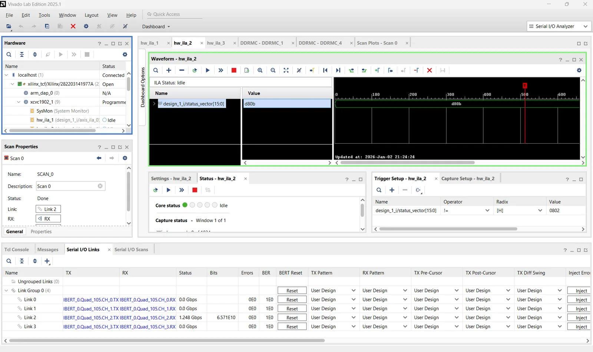
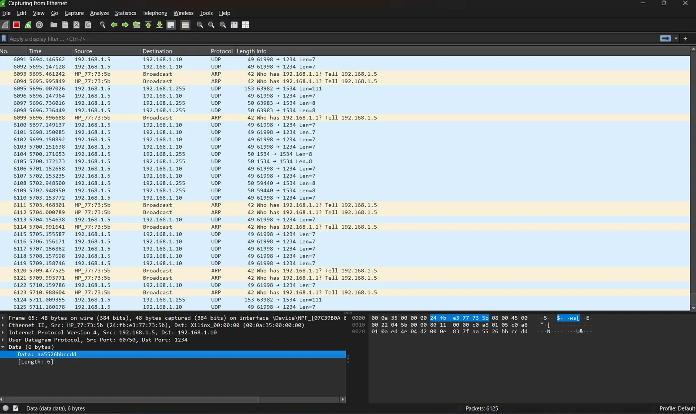
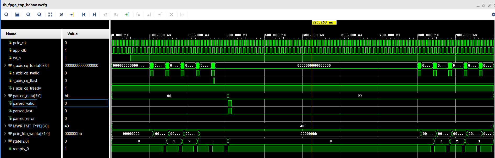

December 2025 – January 2026 · Personal project, in progress
72ns Gateway: A Low-Latency Market-Data Path on Versal
A personal project to learn what it takes to turn a market-data packet into a trading signal in nanoseconds. On an AMD Versal VCK190, UDP frames arrive over a 1000BASE-X SFP link, and RTL filters them, strips the headers, crosses into the application clock, decodes the framing and updates the best bid and offer.
- On the boardThe SFP link is up and an ILA sees the PC's UDP frames reaching the parser.
- In simulationThe whole pipeline, Ethernet frame to best-bid/offer update, passes a self-checking testbench.
- Not yetA latency measurement on hardware. The 72 ns in the name is the goal, not a result.
The pipeline
Each stage is a small AXI4-Stream module with backpressure. The Ethernet subsystem and the clock-crossing FIFO are AMD IP in the Vivado block design; the rest is my RTL.
| Stage | Module | What it does | Cycles |
|---|---|---|---|
| Ethernet MAC | AXI 1G/2.5G Ethernet (IP) | 1000BASE-X on the SFP, promiscuous mode; init_ethernet.v enables RX and TX over AXI4-Lite | – |
| UDP filter | udp_filter.v | Checks EtherType 0x0800, IP protocol 0x11 and destination port 1234 on 32-bit words, then strips the 42-byte Ethernet/IP/UDP header | 5 |
| Clock crossing | AXI4-Stream data FIFO (IP) | 2,048 × 32-bit asynchronous FIFO into the application clock | ~3 |
| Framing parser | packet_parser.v | Unpacks each 32-bit word into bytes, finds the AA 55 sync, reads the length and checks the XOR checksum | 9 |
| Tick assembly | parser_shim.v | Turns the 9-byte payload into price (32-bit), quantity (32-bit) and side | 1 |
| Book builder | book_builder.v | Tracks the best bid and best ask, pulses bbo_updated, and logs the last 1,024 ticks in block RAM | 1 |
| MAC to best-bid/offer update | ~19 | ||
Where the cycles go
At 125 MHz, 19 cycles is 152 ns; with the stages after the FIFO on the 100 MHz application clock it is closer to 180 ns. Either way the byte-wide parser is the largest stage: it spends one cycle on each byte. A parser that takes a whole 32-bit word per cycle would bring that stage from nine cycles to about three, and is the next change on the list.
The framing on the wire
The PC sends ticks inside UDP with a small framing layer: a sync pattern, a length, the payload and an XOR checksum of the payload. A buy of 1,000 at 10,000 looks like this:
AA 55 | 09 | 00 00 27 10 | 00 00 03 E8 | 42 | 9E
sync len price=10000 qty=1000 'B' XOR of the 9 payload bytesIt stands in for an exchange protocol while the data path is built: a real feed such as NASDAQ TotalView-ITCH 5.0 arrives in MoldUDP64 packets, which would replace this layer in the parser.
Bring-up on the board
Three problems stood between a working simulation and live frames in the fabric:
- The link stayed down. The Ethernet subsystem's PMA reset was driven from the interconnect's active-low reset instead of the active-high peripheral reset from the Processor System Reset block, so the transceiver sat in reset. A second miswired net tied an AXI-Stream
tvalidto an active-low reset. - No ARP on the FPGA side. Rather than build an ARP responder, the MAC runs in promiscuous mode, so the PC can send UDP straight to the board.
- Words, not bytes. The MAC delivers 32-bit little-endian words at 125 MHz. The filter therefore works on word offsets (EtherType in word 3, protocol in word 5, destination port in word 9), and the parser unpacks the bytes itself.


Verification
tb_udp_filter- A packet to port 1234 passes with its header stripped; a wrong port and a TCP packet are dropped; toggling
treadyexercises backpressure. tb_trading_pipeline- Builds Ethernet frames byte for byte the way the Python sender does, sends buys at 100 and 105 and sells at 110 and 108, and checks that the book ends at a best bid of 105 and a best ask of 108.
tb_fpga_top- The earlier PCIe path, below.
The first version: a PCIe path
Before the Ethernet link, the same parser sat behind PCIe. pcie_controller.v takes memory-write TLPs from the host in the 250 MHz PCIe domain, a Cummings asynchronous FIFO (Gray-code pointers, two-flop synchronizers) carries the data into a 100 MHz application domain, and the parser decodes it. It runs in simulation. Its own README lists what is left: one byte per TLP uses a quarter of the bus, and the FIFO's read side still runs on the write clock.

tb_fpga_top: TLP writes in the 250 MHz domain, the parser stepping through its states in the 100 MHz domain, and parsed_valid and parsed_last for the decoded bytes.Limits and next steps
The filter handles one UDP port, IPv4 only, with no VLAN tags, IP options or fragments. Next:
- Measure it: timestamp each frame at the MAC and at
bbo_updated, and read the difference out of the fabric. - A 32-bit-wide parser, the largest single saving.
- MoldUDP64 and ITCH 5.0 message decoding in place of the custom framing.
- Several ports, and counters for accepted and dropped frames.
Files and links
- Ethernet pipelineRTL, testbenches and the Vivado project script, on GitHub
- PCIe pathThe first version, with its waveform, on GitHub
- Asynchronous FIFOThe clock-crossing FIFO on its own
- Cummings, SNUG 2002Simulation and Synthesis Techniques for Asynchronous FIFO Design
- NASDAQ TotalView-ITCH 5.0Message specification (PDF)
- MoldUDP64Transport specification (PDF)